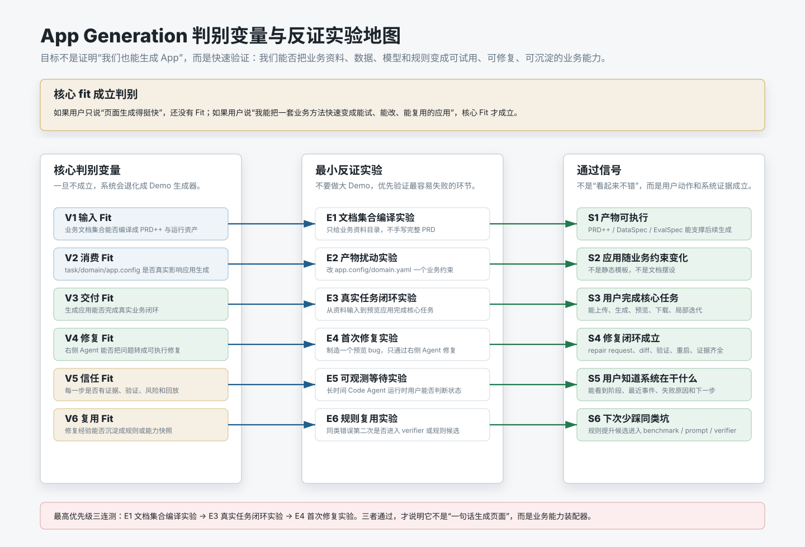

业务文档集合
业务策略文档、BRD / PRD 草案、domain spec、run artifacts。是文档编译的原始输入，不直接进 TDS Builder。
全链路：电商业务场景编译成可运行的应用与可共享的场景能力。App 是壳(A)，能力运行时是承载多场景 Skill 的共享能力层(B)——运行内核通用，业务逻辑按场景可插拔。B 的第一阶段是一组带契约的服务端点：横切的内核服务（数据 / 知识 / 工具 / 证据 / 评估，场景无关、全场景共享）加上调用它们的场景端点，此时尚未收敛成 Skill。MVP 1.0：A+B 同进程合体、逻辑分离。
前半段：业务文档集合 → 文档编译，产出 PRD++ / 能力上下文 / AppSpec / EvalSpec 四类规格。后半段：TDS Builder 编译成 TDS Bundle → 装配 App 壳(A) → 运行期调用能力运行时(B)。能力运行时＝场景无关内核 + 可插拔电商 Skill；证据与反馈回写形成闭环。

这张图展示 App Generation 区别于「一句话生成应用」工具的核心判别变量，以及每个变量对应的最小反证实验和通过信号。
业务策略文档、BRD / PRD 草案、domain spec、run artifacts。是文档编译的原始输入，不直接进 TDS Builder。
app_generation 确定性编译层，产出四类规格：PRD++、能力上下文、AppSpec、EvalSpec。文档不直接变 Prompt，先转可审计规格，作为 TDS Builder 的唯一输入。
PRD++ / 能力上下文 / AppSpec / EvalSpec，是文档编译的交付面，向 TDS Builder 提供结构化业务上下文。
接收四类规格，统一编译成单一交付包 TDS Bundle。
按确定性分流：模板装配做确定结构、能力运行时绑定接业务逻辑、Code Agent 兜底定制。
自包含的 UI / 页面 / 状态机。可漂移、可重生成、可离线预览，不是事实源。
场景无关内核（执行/证据/回放/eval）+ 可插拔电商 Skill，单一真相、可回放。service / skill / runtime 是三层：升级只动封装形态（裸函数 → skill 包），端点签名不变，App 零改动。
运行期 evidence 与 rsi_feedback 回写能力运行时，闭环沉淀，而非从 app 代码逆向。
壳可漂移，能力单一真相。
确定走模板，逻辑走能力运行时，定制才 codegen。
端点先上线，稳定后内部收敛成 skill。
能力运行时是通用内核 + 可插拔场景 Skill，不是单一通用引擎。
端点 input/output 有 schema，结论挂 evidence。
A+B 物理合体、逻辑分离；后续可平移拆为独立服务。
一句总结：全链路把电商业务场景编译成可运行的应用与可共享的场景能力——App 是壳，能力运行时以「内核 + 多场景 Skill」承载业务；MVP 1.0 先同进程合体、逻辑分离，再按需拆分。